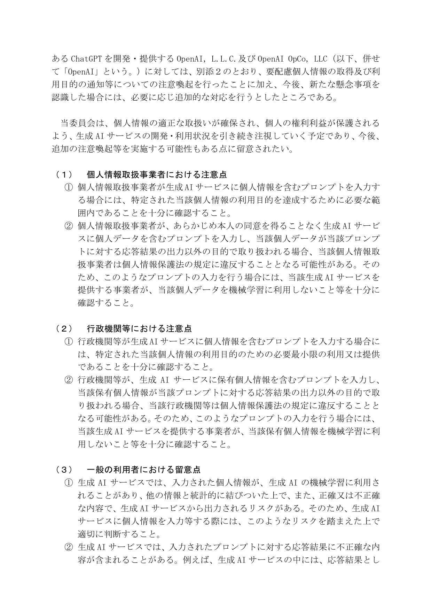
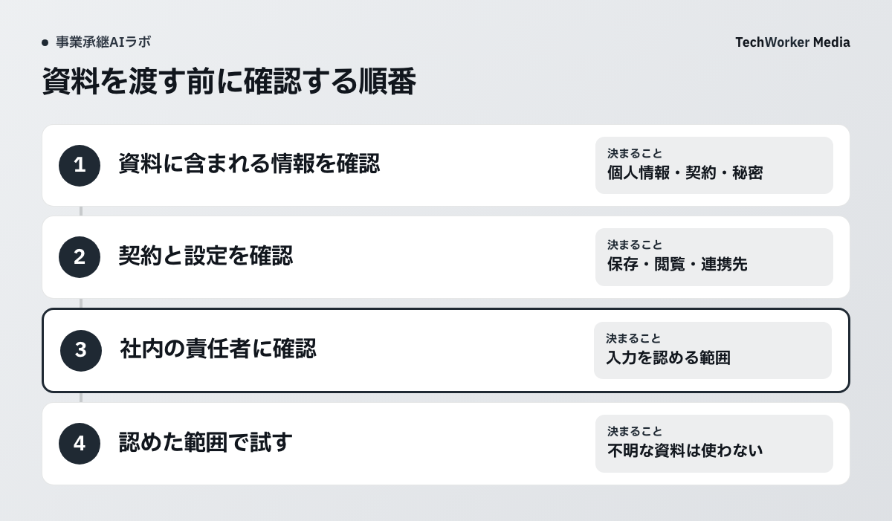
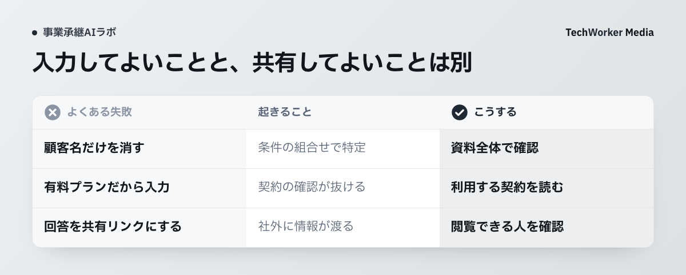

個人情報保護委員会が示す入力前の確認事項
利用目的の範囲と、個人データが応答以外の目的で扱われないかを確認してから入力します。

この注意喚起は、顧客名を伏せれば入力できると述べたものではありません。承継資料では、顧客、従業員、取引条件、技術情報が同じ文書に入ります。各情報が入力目的に必要かを確認します。
名前以外の組合せも見る
氏名を置き換えても、日付、金額、役職、取引内容の組合せから、個人や会社を特定できないか確認します。

- 従業員の家族、健康、人事評価、連絡先。
- 顧客ごとの価格、原価、契約条件、未公表の取引。
- 製造条件、図面、ノウハウ、認証情報。
- 第三者から預かり、利用目的や共有先が限られる情報。
入力目的に不要な項目は削り、必要な情報だけで問いが解けるかを先に試します。判断できない資料は、架空データへ置き換えて手順だけ確認します。
契約・設定・共有先を確認する
同じサービス名でも、契約と管理設定、連携先、共有リンクで扱いが変わります。

確認するのは、学習利用、保存期間、管理者と提供者の閲覧、削除、外部連携、共有リンクです。入力を許可された資料でも、回答を社外公開リンクで共有できるとは限りません。入力可否と回答の共有範囲を別々に決めます。
迷った資料をAIへ渡さないための確認表を作る
使えるサービス、入力できる情報、確認者、迷ったときの連絡先を一枚にします。
後継者と引き継ぐ側が同じ表を使います。「個人情報禁止」という抽象語を避け、顧客台帳、従業員面談メモ、図面、価格表のように自社の資料名で例示します。契約や設定が変わったときの再確認日も入れます。
次にAIへ資料を渡す前に、対象資料を一つ選び、情報区分と契約・設定の確認欄を埋めてください。未確認の欄があれば実資料を入れず、責任者へ戻します。
出典
資料確認日：2026年10月6日。本文の分類表と確認手順はTechWorkerの実践案です。